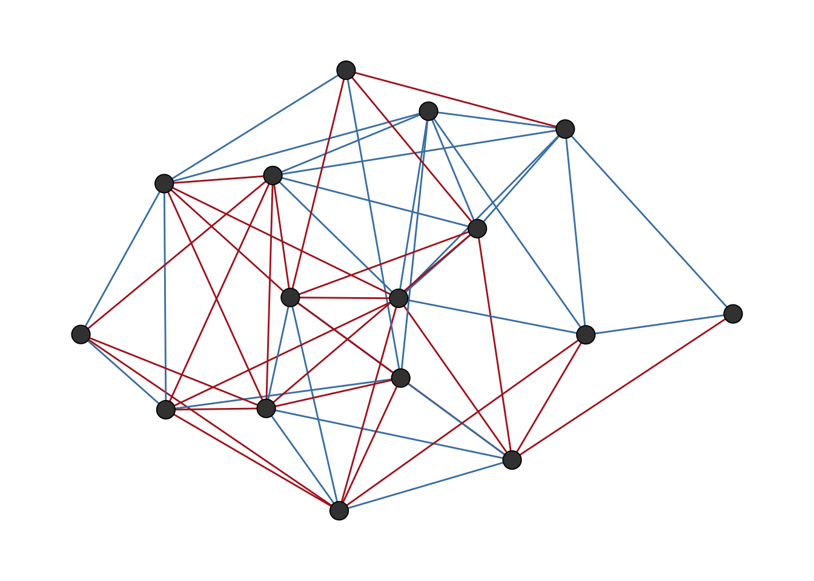
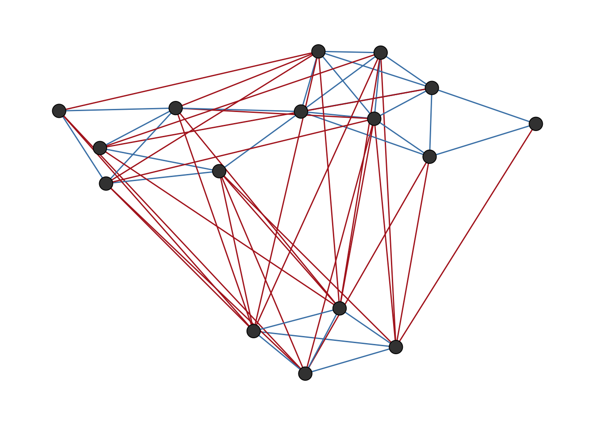
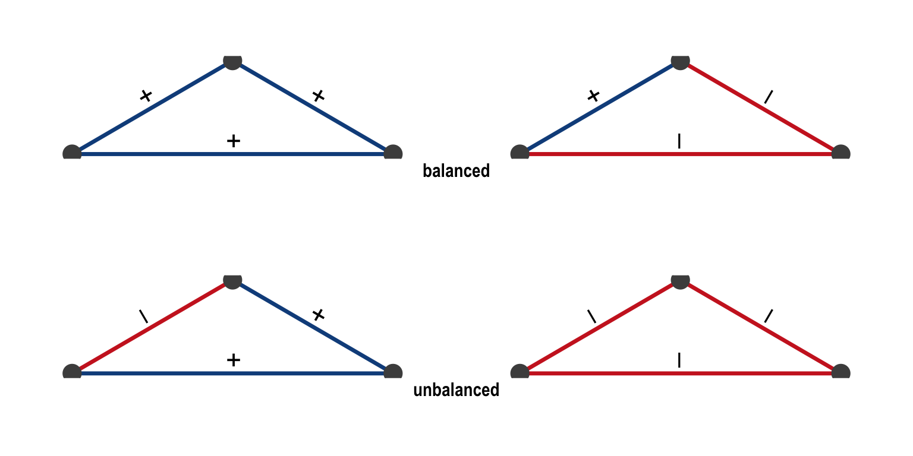
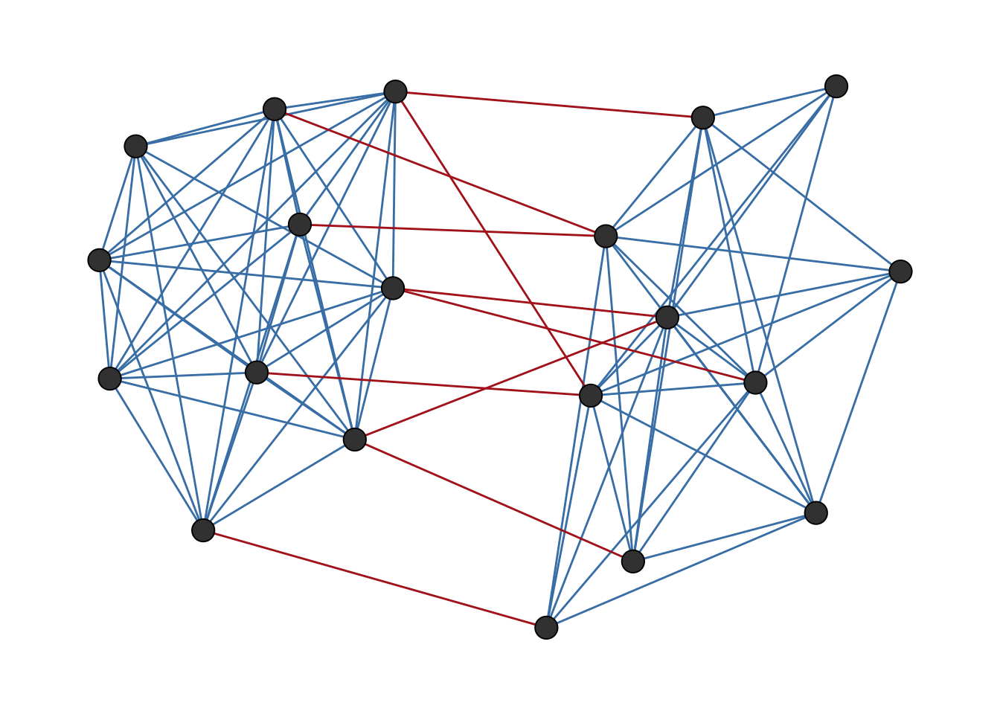
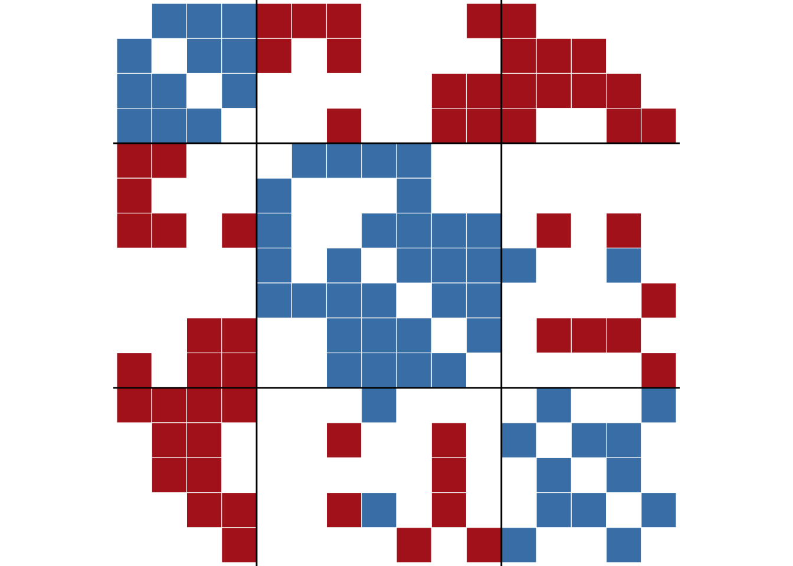
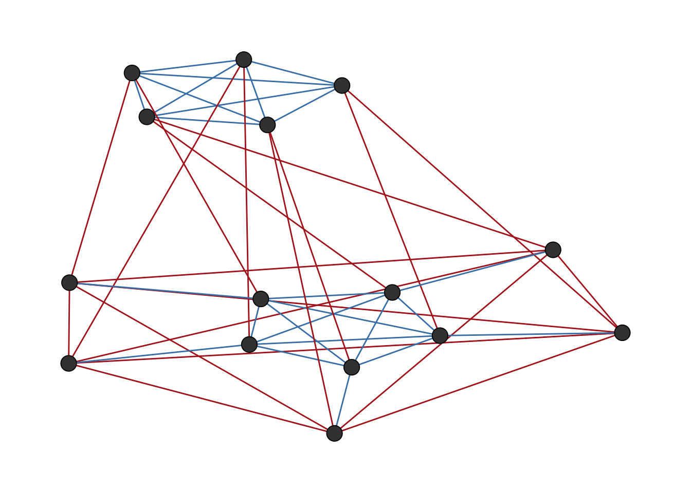
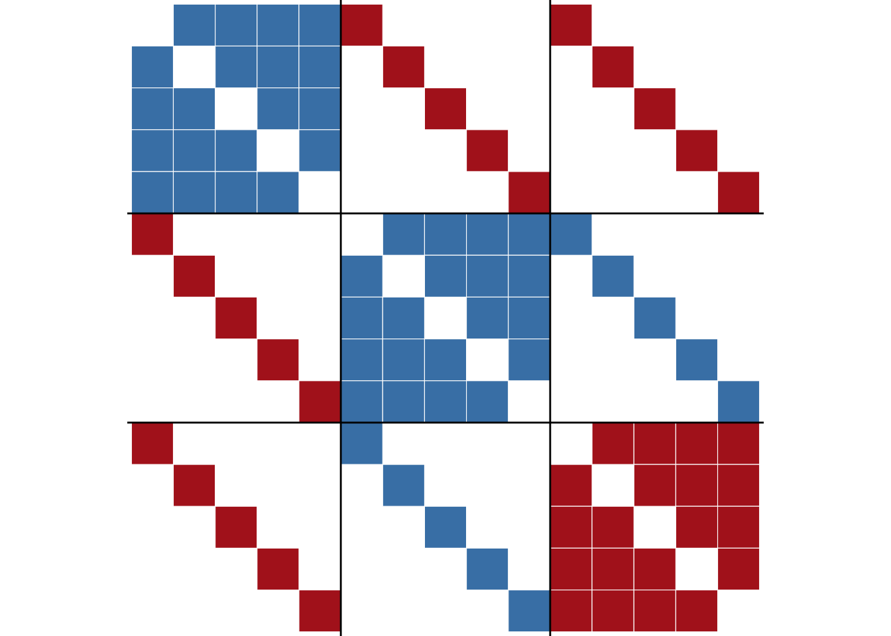
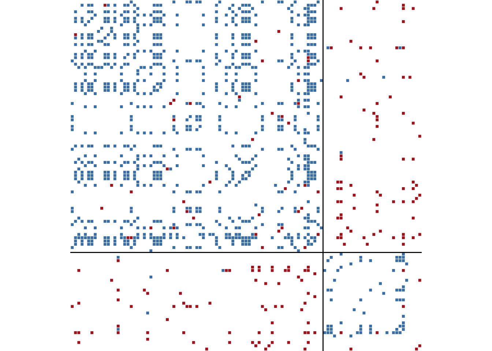

library(igraph)
library(signnet)
library(networkdata)6 Signed Networks
Most of social network analysis deals with relations that are inherently positive: friendship, collaboration, advice seeking, trade. The tools we use to study networks, from centrality indices to community detection, were largely developed with these positive ties in mind. But social life is not only about who we like. People form rivalries, nations go to war, and online communities like and dislike content. When we want to study networks that contain both positive and negative ties, we enter the topic of signed networks.
Signed networks require their own analytical toolkit. Standard centrality measures do not account for the difference between a node connected to five friends versus one connected to five enemies. Community detection algorithms that look for dense subgroups miss the point when the structure is defined by who is against whom, not just who is with whom. In this chapter, we introduce the key concepts and methods for analysing signed networks: structural balance, blockmodeling, and centrality.
6.1 Packages Needed for this Chapter
6.2 Basic Tools for Signed Networks
The signnet package provides dedicated tools for analysing signed networks in R. The package builds on igraph and assumes that a signed network is an igraph object with an edge attribute sign, containing values 1 (positive) or -1 (negative). All functions in the package check for this attribute and will throw an error if it is missing or contains other values.
We will use the tribes dataset to illustrate some basic functionality of the package. This dataset is a signed social network of sixteen tribes from the Gahuku-Gama alliance structure of the Eastern Central Highlands of New Guinea. Tribes are connected by friendship ties (“rova”) and enmity ties (“hina”).
data("tribes")The function ggsigned() provides a convenient way to visualise signed networks. Figure 6.1 shows the tribes network visualised with ggsigned(), where blue edges represent positive ties and red edges represent negative ties.
ggsigned(tribes)
tribes network visualised with ggsigned().
The color of the edges can be customised with the edge_cols parameter.
The parameter weights can be used to artificially “pull” nodes connected with negative ties apart, which can help to visually separate potential groups of positive ties as shown in Figure 6.2.
ggsigned(tribes, weights = TRUE)
tribes network visualised with ggsigned() using weights to separate negative ties.
A signed network is represented by a signed adjacency matrix, where entries are 1, -1, or 0. It can be extracted with the function as_adj_signed().
as_adj_signed(tribes) Gavev Kotun Ove Alika Nagam Gahuk Masil Ukudz Notoh Kohik Geham Asaro
Gavev 0 1 -1 -1 -1 -1 0 0 0 0 0 -1
Kotun 1 0 -1 0 -1 -1 0 0 -1 -1 0 0
Ove -1 -1 0 1 0 1 1 1 0 0 0 0
Alika -1 0 1 0 0 0 0 1 0 0 0 0
Nagam -1 -1 0 0 0 0 1 0 1 0 0 0
Gahuk -1 -1 1 0 0 0 1 1 -1 0 1 1
Masil 0 0 1 0 1 1 0 1 0 0 1 1
Ukudz 0 0 1 1 0 1 1 0 0 0 1 1
Notoh 0 -1 0 0 1 -1 0 0 0 1 -1 0
Kohik 0 -1 0 0 0 0 0 0 1 0 -1 0
Geham 0 0 0 0 0 1 1 1 -1 -1 0 1
Asaro -1 0 0 0 0 1 1 1 0 0 1 0
Uheto 0 0 0 0 0 -1 1 0 1 1 -1 0
Seuve 0 0 0 0 1 0 0 -1 0 0 0 -1
Nagad 1 1 0 0 -1 0 0 0 -1 -1 -1 -1
Gama 1 1 0 0 -1 -1 0 0 0 0 -1 -1
Uheto Seuve Nagad Gama
Gavev 0 0 1 1
Kotun 0 0 1 1
Ove 0 0 0 0
Alika 0 0 0 0
Nagam 0 1 -1 -1
Gahuk -1 0 0 -1
Masil 1 0 0 0
Ukudz 0 -1 0 0
Notoh 1 0 -1 0
Kohik 1 0 -1 0
Geham -1 0 -1 -1
Asaro 0 -1 -1 -1
Uheto 0 1 -1 -1
Seuve 1 0 0 -1
Nagad -1 0 0 1
Gama -1 -1 1 06.3 Structural Balance
Structural balance theory originates in the social psychology of Fritz Heider (1946) and was formalised for graphs by Cartwright and Harary (1956). The core idea is intuitive: consider three people. If Alice and Bob are friends, and Bob and Carol are friends, we expect Alice and Carol to also be friends: “the friend of my friend is my friend.” Similarly, if Alice and Bob are enemies and Bob and Carol are enemies, we expect Alice and Carol to be friends: “the enemy of my enemy is my friend.” These configurations are balanced. A triangle where all three pairs are enemies, or where two pairs are friends but one pair are enemies, feels unstable and is considered unbalanced.
More formally, a triangle is balanced if it has an even number of negative ties (zero or two), and unbalanced if it has an odd number (one or three). All four possible configurations are shown in Figure 6.3.

A network is balanced if it can be partitioned into two groups such that all ties within groups are positive and all ties between groups are negative.
We can generate such a simple balanced network with sample_islands_signed(), which creates groups with positive intra-group ties and negative inter-group ties. It follows the logic of the function sample_islands() from igraph, with the added twist of making inter group edges negative. Setting islands.n = 2 creates a perfectly balanced network with two groups.
g_bal <- sample_islands_signed(
islands.n = 2,
islands.size = 10,
islands.pin = 0.8,
n.inter = 5
)The network is shown in Figure 6.4.
ggsigned(g_bal)
We can verify that this network is perfectly balanced by counting its triangles. Balanced networks contain only “+++” and “+–” triangles, with no “++-” or “—” triangles.
count_signed_triangles(g_bal)+++ ++- +-- ---
146 0 5 0 Increasing the islands.n parameter to more than two creates networks that are not balanced in the strict two-group sense but are “clusterable” as defined by Davis (1967) – they can be partitioned into more than two groups with the same within-positive, between-negative pattern.
Real-world networks are rarely perfectly balanced. The question then becomes: how balanced a given network is. The signnet package offers three methods for measuring the degree of balancedness via balance_score(). All return a value between zero (perfectly unbalanced) and one (perfectly balanced).
For our perfectly balanced synthetic network, all three methods obviously agree.
balance_score(g_bal, method = "triangles")[1] 1balance_score(g_bal, method = "walk")[1] 1balance_score(g_bal, method = "frustration")[1] 1The triangles method returns the fraction of balanced triangles. It is the most intuitive but only considers local structure.
The walk method uses eigenvalues of the signed and unsigned adjacency matrices to capture balance at all scales, not just triangles. It is based on the work of Estrada (2019).
The frustration method finds a partition of the network into two groups and counts how many edges violate the balance pattern (negative ties within groups and positive ties between groups). The fewer violations, the more balanced the network (Aref and Wilson 2018). Since finding the optimal partition is computationally hard, the function uses simulated annealing and returns an upper bound. For exact results, frustration_exact() solves the problem via integer programming for small networks. For the tribes network, which is not perfectly balanced, the three methods give the following results.
balance_score(tribes, method = "triangles")[1] 0.8676471balance_score(tribes, method = "walk")[1] 0.3575761balance_score(tribes, method = "frustration")[1] 0.7586207This disagreement is common for empirical networks and reflects the fact that each method captures different aspects of balance.
6.4 Blockmodeling
Structural balance theory dictates that a balanced network can be partitioned into groups with positive intra-group ties and negative inter-group ties. Blockmodeling is a computational approach to finding such partitions (Doreian and Mrvar 1996).
The function signed_blockmodel() partitions a network into k predefined blocks, optimising for positive ties within blocks and negative ties between blocks. The objective function to be optimized is \(P(C) = \alpha N + (1-\alpha)P\), where \(N\) is the total number of negative ties within blocks and \(P\) is the total number of positive ties between blocks. The parameter alpha controls the trade-off between these two values. The closer alpha is to 1, the more the algorithm prioritises negative ties within blocks. The closer to 0, the more it prioritises positive ties between blocks. Setting alpha = 0.5 gives equal weight to both types of errors.
For the tribes network, we try to find a partition into three blocks, which is the known structure of the Gahuku-Gama alliance system.
set.seed(1108)
clu <- signed_blockmodel(tribes, k = 3, alpha = 0.5, annealing = TRUE)
clu$membership [1] 2 2 1 1 3 1 1 1 3 3 1 1 3 3 2 2clu$criterion[1] 2The function returns a list with two entries: the block membership of each node and the value of \(P(C)\), where lower values indicate a better fit. Setting annealing = TRUE uses simulated annealing in the optimisation, which generally produces better results at the cost of longer running time. The result shows that only 2 edges are either positive intergroup ties or negative intragroup ties.
The obtained block structure can be visualized with ggblock() as shown in Figure 6.5.
ggblock(tribes, clu$membership, show_blocks = TRUE)
tribes network.
The figure shows that the two edges that violate the balance pattern are between groups two and three, which have two positive ties between them. The rest of the structure is perfectly balanced, with positive ties within groups and negative ties between groups.
The traditional blockmodeling assumes a single pattern of positive blocks on the diagonal and negative blocks off the diagonal. But many networks have more complex structures (Doreian and Mrvar 2009). For instance, two groups might be allies (positive ties between them) while both are enemies of a third group.
The function signed_blockmodel_general() allows us to specify arbitrary block structures via the blockmat parameter. Each entry in the matrix indicates whether we expect the corresponding block to be positive (1) or negative (-1).
In the following we construct a synthetic network with three groups, with a structure which cannot be captured by the traditional blockmodel but can be specified in the general blockmodel.
## construct a network with a non-standard block structure
g1 <- g2 <- g3 <- make_full_graph(5)
V(g1)$name <- as.character(1:5)
V(g2)$name <- as.character(6:10)
V(g3)$name <- as.character(11:15)
g <- Reduce("%u%", list(g1, g2, g3))
E(g)$sign <- 1
E(g)$sign[1:10] <- -1
g <- add_edges(g, c(rbind(1:5, 6:10)), attr = list(sign = -1))
g <- add_edges(g, c(rbind(1:5, 11:15)), attr = list(sign = -1))
g <- add_edges(g, c(rbind(11:15, 6:10)), attr = list(sign = 1))ggsigned(g, weights = TRUE)
Here, groups two and three have positive ties between them, while both have negative ties with group one. The block structure matrix specified below reflects this.
set.seed(1108)
blockmat <- matrix(
c(1, -1, -1,
-1, 1, 1,
-1, 1, -1),
3, 3, byrow = TRUE)
blockmat [,1] [,2] [,3]
[1,] 1 -1 -1
[2,] -1 1 1
[3,] -1 1 -1general <- signed_blockmodel_general(g, blockmat, alpha = 0.5)
general$criterion[1] 0The obtained block structure is shown in Figure 6.7.
ggblock(g, general$membership, show_blocks = TRUE)
Comparing the general model with the traditional model on this network shows the benefit of specifying the correct block structure.
traditional <- signed_blockmodel(g, k = 3, alpha = 0.5, annealing = TRUE)
c(general = general$criterion, traditional = traditional$criterion) general traditional
0 6 A lower criterion value indicates a better fit. The general model performs better here because it matches the actual structure of the network.
6.5 Centrality
In unsigned networks, having many connections is straightforwardly advantageous. But in signed networks, the picture is more nuanced. A tribe with six alliances and no enemies is in a very different position from one with three alliances and three enemies, even though both have the same number of ties. Centrality indices for signed networks must account for this distinction.
The function degree_signed() offers four variants, controlled by the type parameter:
type = "pos": count only positive neighborstype = "neg": count only negative neighborstype = "ratio": positive neighbors / (positive + negative neighbors)type = "net": positive neighbors minus negative neighbors
For directed networks, the mode parameter distinguishes “in” and “out” versions.
data.frame(
tribe = V(tribes)$name,
pos = degree_signed(tribes, type = "pos"),
neg = degree_signed(tribes, type = "neg"),
ratio = round(degree_signed(tribes, type = "ratio"), 2),
net = degree_signed(tribes, type = "net")
) tribe pos neg ratio net
Gavev Gavev 3 5 0.38 -2
Kotun Kotun 3 5 0.38 -2
Ove Ove 4 2 0.67 2
Alika Alika 2 1 0.67 1
Nagam Nagam 3 4 0.43 -1
Gahuk Gahuk 5 5 0.50 0
Masil Masil 7 0 1.00 7
Ukudz Ukudz 6 1 0.86 5
Notoh Notoh 3 4 0.43 -1
Kohik Kohik 2 3 0.40 -1
Geham Geham 4 5 0.44 -1
Asaro Asaro 4 4 0.50 0
Uheto Uheto 4 4 0.50 0
Seuve Seuve 2 3 0.40 -1
Nagad Nagad 3 6 0.33 -3
Gama Gama 3 6 0.33 -3Beyond degree, the signnet package implements two more centrality indices. The PN index by Everett and Borgatti (2014) is conceptually similar to Katz status for unsigned networks. It takes into account not just direct ties but also the signs of indirect paths through the network.
Eigenvector centrality (eigen_centrality_signed()) extends the idea that a node is central if it is connected to other central nodes, adapted for signed networks (Bonacich and Lloyd 2004).
cent_df <- data.frame(
tribe = V(tribes)$name,
degree_net = degree_signed(tribes, type = "net"),
eigen = round(eigen_centrality_signed(tribes), 3),
pn = round(pn_index(tribes), 3)
)
cent_df tribe degree_net eigen pn
Gavev Gavev -2 1.000 0.753
Kotun Kotun -2 0.889 0.764
Ove Ove 2 0.716 1.042
Alika Alika 1 0.368 1.023
Nagam Nagam -1 0.743 0.903
Gahuk Gahuk 0 0.955 0.905
Masil Masil 7 0.760 1.224
Ukudz Ukudz 5 0.671 1.141
Notoh Notoh -1 0.211 0.874
Kohik Kohik -1 0.239 0.903
Geham Geham -1 0.696 0.865
Asaro Asaro 0 0.914 0.934
Uheto Uheto 0 0.234 0.916
Seuve Seuve -1 0.059 0.875
Nagad Nagad -3 0.912 0.715
Gama Gama -3 0.987 0.715The correlation between eigenvector centrality and the PN index tells us how much these two measures agree.
cor(eigen_centrality_signed(tribes), pn_index(tribes), method = "kendall")[1] -0.2Note that the adjacency matrix of a signed network may not have a dominant eigenvalue. When this occurs, eigenvector centrality is not well-defined and eigen_centrality_signed() will return an error. In such cases, the PN index provides a more robust alternative.
6.6 Signed Two-Mode Networks
The signnet package also provides tools for working with signed two-mode networks. Projecting a signed two-mode network onto one of its modes is less straightforward than in the unsigned case, because paths through negative ties can change the sign of the resulting projection. The package implements a duplication approach that resolves this issue and also accounts for ambivalent ties, where both positive and negative paths exist between two nodes. For details, see the signnet package vignette on signed two-mode networks.
6.7 Use Case: International Relations
The cowList dataset (included in the signnet package; see Doreian and Mrvar (2015)) contains 51 signed networks of inter-state relations in overlapping four-year windows from 1946 to 1999, derived from the Correlates of War project. Two countries are connected by a positive tie if they formed an alliance or signed a peace treaty, and by a negative tie if they were at war or involved in other conflicts.
data("cowList")
names(cowList)[c(1, 20, 51)][1] "46-49" "65-68" "96-99"Each network covers a four-year window (e.g., “65-68” covers 1965–1968). Let us examine two snapshots: one from the height of the Cold War and one from the post-Cold War period.
cow_cold <- cowList[["65-68"]]
cow_post <- cowList[["93-96"]]c(nodes_cold = vcount(cow_cold), edges_cold = ecount(cow_cold),
nodes_post = vcount(cow_post), edges_post = ecount(cow_post))nodes_cold edges_cold nodes_post edges_post
107 590 148 1181 We can assess how balanced the international system was in each period:
data.frame(
method = c("triangles", "walk", "frustration"),
cold_war = c(
balance_score(cow_cold, method = "triangles"),
balance_score(cow_cold, method = "walk"),
balance_score(cow_cold, method = "frustration")
),
post_cold_war = c(
balance_score(cow_post, method = "triangles"),
balance_score(cow_post, method = "walk"),
balance_score(cow_post, method = "frustration")
)
) method cold_war post_cold_war
1 triangles 0.9450199 0.9264774
2 walk 0.6916381 0.2566049
3 frustration 0.8983051 0.8933108Applying blockmodeling reveals the alliance structure. During the Cold War, we would expect to find blocs corresponding to the Western and Eastern alliances:
set.seed(1108)
clu_cold <- signed_blockmodel(cow_cold, k = 2, alpha = 0.5, annealing = TRUE)ggblock(cow_cold, clu_cold$membership, show_blocks = TRUE)
The block membership can be inspected alongside the country names to see which states cluster together:
split(V(cow_cold)$name, clu_cold$membership)$`1`
[1] "ALG" "ARG" "AUS" "BAR" "BEL" "BOL" "BRA" "CAN" "CAF" "CHA" "CHL" "COL"
[13] "CON" "COS" "CYP" "CZE" "DEN" "DOM" "ECU" "EGY" "ELS" "ETH" "FRA" "GAB"
[25] "GFR" "GHA" "GRC" "GUA" "HAI" "HON" "ICE" "IND" "IRN" "IRQ" "ITA" "CDI"
[37] "JPN" "JOR" "KEN" "KUW" "LAO" "LEB" "LYB" "LUX" "MYS" "MLI" "MAS" "MEX"
[49] "MON" "MOR" "NDL" "NZD" "NIC" "NOR" "PAK" "PAN" "PAR" "PER" "PHL" "PRG"
[61] "RVN" "SAU" "SAF" "KOR" "ESP" "SUD" "SYR" "TWN" "THA" "TRI" "TUN" "TUR"
[73] "GBR" "USA" "URU" "VZA" "YAR" "YUG" "ZIM"
$`2`
[1] "AFG" "ALB" "BUL" "BUI" "CMB" "CHN" "CUB" "DRC" "FIN" "GDR" "GUI" "GUY"
[13] "HUN" "INS" "ISR" "MAG" "MYR" "NEP" "NKR" "POL" "ROM" "RUS" "RWA" "SOM"
[25] "TGO" "UGA" "VTN" "ZAM"References
Aref, Samin, and Mark C Wilson. 2018. “Measuring Partial Balance in Signed Networks.” Journal of Complex Networks 6 (4): 566–95.
Bonacich, Phillip, and Paulette Lloyd. 2004. “Calculating Status with Negative Relations.” Social Networks 26 (4): 331–38.
Cartwright, Dorwin, and Frank Harary. 1956. “Structural Balance: A Generalization of Heider’s Theory.” Psychological Review 63 (5): 277.
Davis, James A. 1967. “Clustering and Structural Balance in Graphs.” Human Relations 20 (2): 181–87.
Doreian, Patrick, and Andrej Mrvar. 1996. “A Partitioning Approach to Structural Balance.” Social Networks 18 (2): 149–68.
Doreian, Patrick, and Andrej Mrvar. 2009. “Partitioning Signed Social Networks.” Social Networks 31 (1): 1–11.
Doreian, Patrick, and Andrej Mrvar. 2015. “Structural Balance and Signed International Relations.” Journal of Social Structure 16: 1.
Estrada, Ernesto. 2019. “Rethinking Structural Balance in Signed Social Networks.” Discrete Applied Mathematics.
Everett, Martin G, and Stephen P Borgatti. 2014. “Networks Containing Negative Ties.” Social Networks 38: 111–20.
Heider, Fritz. 1946. “Attitudes and Cognitive Organization.” The Journal of Psychology 21 (1): 107–12.